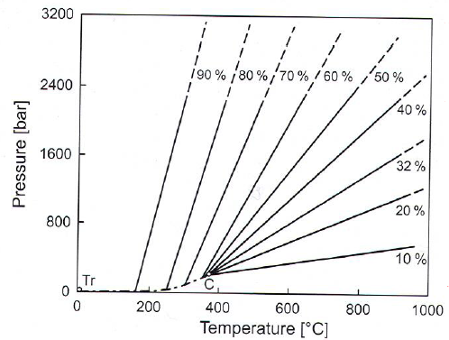
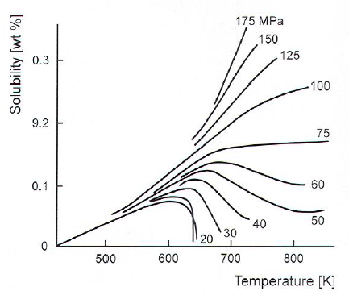
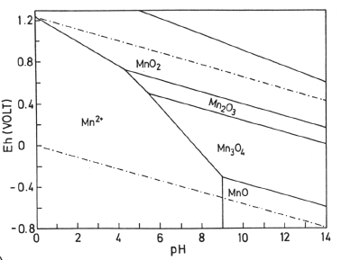
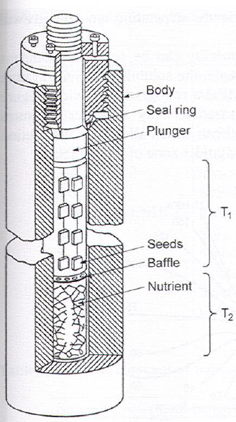

Solvothermal
The big thing here is beeing able to dissolve various compounds which are not dissolvable at regular conditions.
- H\(_2\)O, T>100\(^\circ\)C
- Other solvents: NH\(_3\), HF, HBr, Cl\(_2\), HCl, CO\(_2\), SO\(_4\), H\(_2\)S, CS\(_2\), C\(_2\)H\(_5\)OH +++
- NH\(_4\) is common (Ammonothermal)
- Hydrothermal:
- Crystallization of large crystals
- Synthesis of e.g. oxide powders (ex: Zeolites)
- Leaching e.g. treatment of ores
- Started 1845
- Important for big crystals of quartz
- Grown by the kilotonne in 1900
- Used for electronics, watches(oscillators), optical properties, laser windows, prisms
- Other important crystals: ZnO2, Emerald, Calcite
- Important for big crystals of quartz
Technical
- Usually more material dissolves at higher T
- H\(_2\)O with higher T:
- Ion product increases
- Viscosity decreases
- Polarity (dielectric constant) decreases (but increases with pressure)
- Synthesis usually in closed vessels
- T-P-V considerations are CRUCIAL
Two main synthesis types:
- Isothermal: powder synthesis
- T-gradient: for larger crystals
Sub vs Supercritical
- Closed autoclave -> autogeneous pressure
- H\(_2\)O above these conds is supercritical T: 374.15\(^\circ\)C, P = 220bar.
Autoclave filling
- 32% filling -> H\(_2\)O fills autoclave at T\(_c\).
- Higher filling results in full autoclave at lower T, and pressure increase.
- ex: 80% filling at 245\(^\cric\)C -> autoclave explosion 
Mineralizers
- Used to increase crystallization rates
- Usually F\(^-\) or OH\(^-\) (alkali metal hydroxides, chlorides..)
- Quartz synthesis at T-gradient 400-380\(^\circ\)C at 1kbar
- Solubility too low at these temps, NaOH(or others) can be added
Retrograde solubility
- When solubility decrease at higher T.
- Can be due to properties change in solvent or compound
- Ex: SiO\(_2\) decrease in solubility over 350\(^\circ\)C as long as below 700bar.
- Also seen for halides, calcium carbonate ..

Hydrothermal
Advantages:
- Moderate T (100-300\(^\circ\)C) subcritically at autogeneous pressures.
- Possible to synthesise materials below transformation temperatures (\(\alpha\)-CuI @ 390\(^\circ\)C, \(\alpha-\beta\) transition for Quartz @ 580\(^\circ\)C)
- Transition metals can be made with unusual ox-states (CrO\(_2\))
- Prep of metastable phases (GeO\(_2\) with Quarts structure using Quarts seed)
- Formation of Zeolites + other microporous materials
- Usually dissolution/Precipitation mechanisms
Leaching:
- Bayer process -> extract high-grade Al(OH)\(_3\) from bauxite ore
- Hydrothermal extraction w/dense NaOH solution via reaction to soluble aluminate complex(NaAl(OH)\(_4\))
- Al(OH)\(_3\) precipitated by cooling, diluting and seeding
- Heated to corundum for Al metal production.
Eh-Ph diagrams
- Ox state can be controlled by pH and V.
- Diagrams change with T and P
- Lines pushed down and left at higher T 
Buffers: Used to control the potential to ensure spesific ox-states. Hydrogen permeable membranes can be used. CuO can buffer to ensure Fe\(^{2+}\) is not made.
Setups
Synthesis in T-gradient
- Nutrient (polycrystalline powder of precursor) placed in bottom
- Baffle (perforated disc) separates dissolution and growth zones and reduces particle flow
- T\(_1\)< T\(_2\) -> convection to transport hot L to GrowthZone.
- Required: some wt% solubility 0.001-0.1wt% sol diff over 10

Autoclaves
- Open and closed vessels
- Morey: Closed, up to 400\(^\circ\)C, 400 bar, simple, autogeneous
- Tuttle: “Cold seal” outside oven, may be watercooled. Pressure from external source, up to 1100\(^\circ\)C, 5000bar.